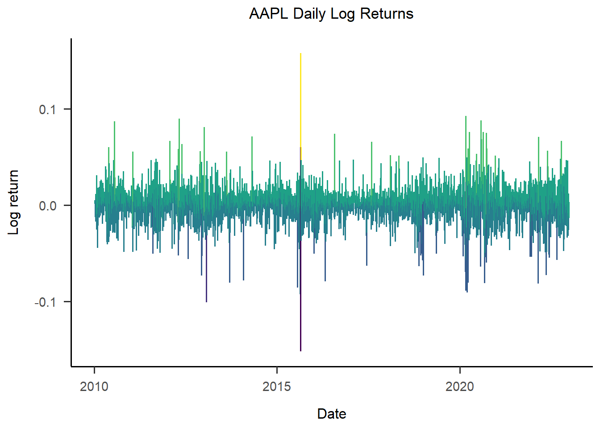
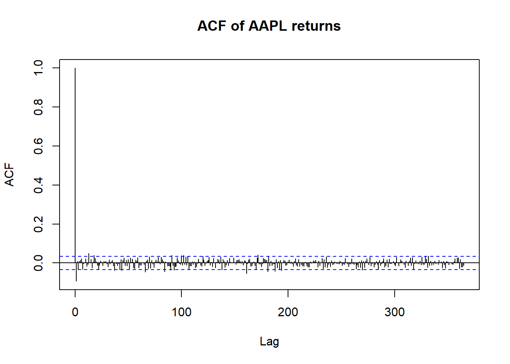
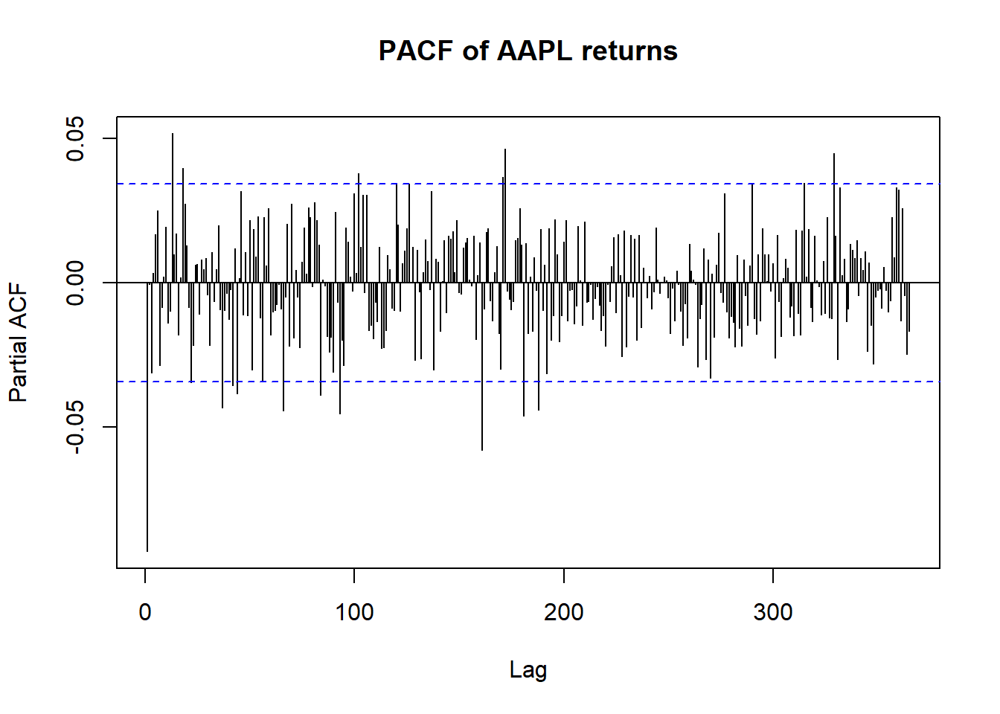
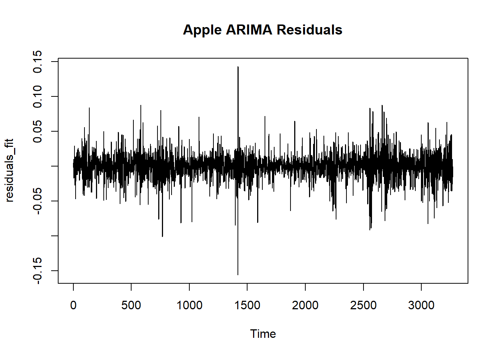
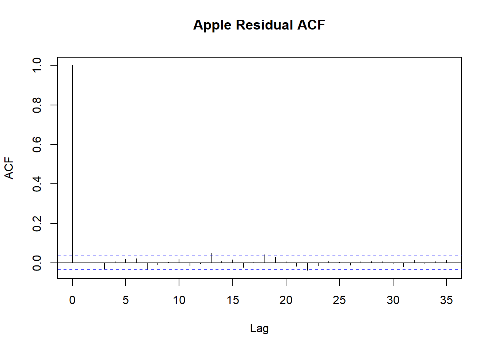
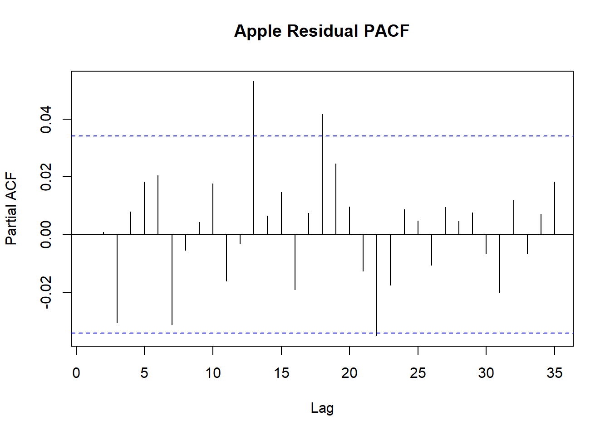
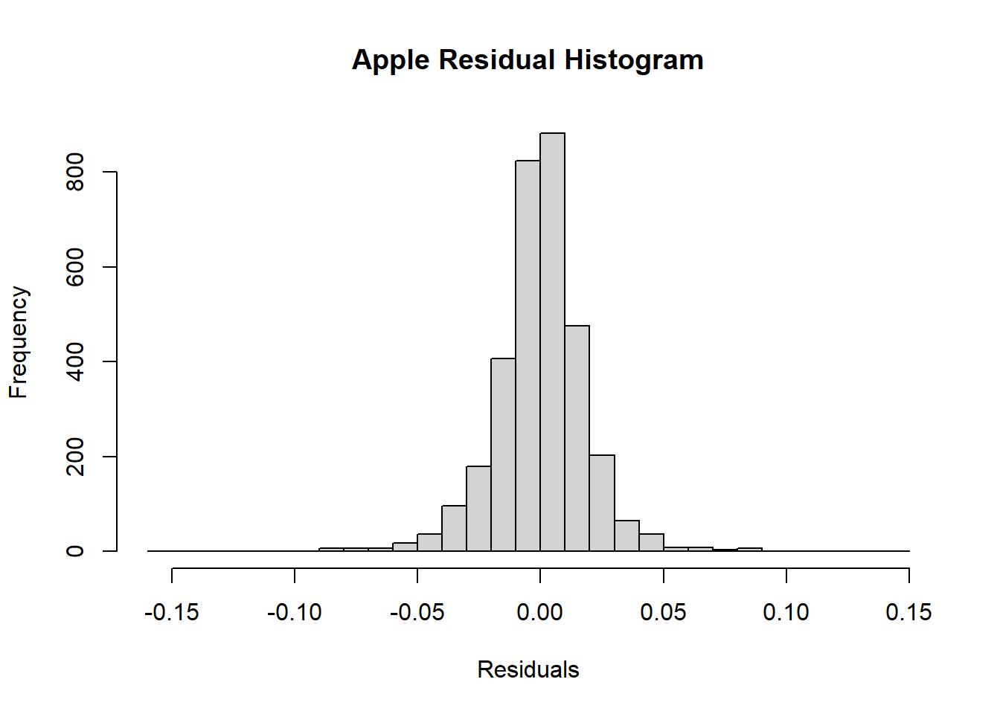

data =read.csv(here("data/analysis_data.csv"))summary(data)
X company stock_symbol date
Min. : 1 Length:45088 Length:45088 Length:45088
1st Qu.:11273 Class :character Class :character Class :character
Median :22545 Mode :character Mode :character Mode :character
Mean :22545
3rd Qu.:33816
Max. :45088
market_open market_close final_close low
Min. : 1.076 Min. : 1.053 Min. : 1.053 Min. : 0.9987
1st Qu.: 25.670 1st Qu.: 25.660 1st Qu.: 22.076 1st Qu.: 25.3600
Median : 47.930 Median : 47.970 Median : 45.377 Median : 47.4650
Mean : 89.267 Mean : 89.271 Mean : 85.210 Mean : 88.1119
3rd Qu.:128.662 3rd Qu.:128.641 3rd Qu.:113.672 3rd Qu.:127.2539
Max. :696.280 Max. :691.690 Max. :691.690 Max. :686.0900
high volume year intraday_volatility
Min. : 1.109 Min. :5.892e+05 Min. :2010 Min. :0.003071
1st Qu.: 25.930 1st Qu.:9.629e+06 1st Qu.:2013 1st Qu.:0.013789
Median : 48.460 Median :2.646e+07 Median :2016 Median :0.019886
Mean : 90.370 Mean :5.298e+07 Mean :2016 Mean :0.024239
3rd Qu.:129.849 3rd Qu.:5.840e+07 3rd Qu.:2019 3rd Qu.:0.029532
Max. :700.990 Max. :1.881e+09 Max. :2023 Max. :0.292125
return vol_30
Min. :-0.4638096 Min. :0.06077
1st Qu.:-0.0089647 1st Qu.:0.19723
Median : 0.0008651 Median :0.26590
Mean : 0.0006184 Mean :0.31269
3rd Qu.: 0.0106564 3rd Qu.:0.37912
Max. : 0.3936936 Max. :1.65848
NA's :14 NA's :406
data = data |>mutate(date =as.Date(date))
Convert to time series object
Time series analysis requires a special object type, I create that here. Each variable will have its own time series object.
stocks_ts <- data |>arrange(stock_symbol, date) |>as_tsibble(key = stock_symbol, index = date)
ggplot(aapl, aes(x = date, y = return, color = return)) +geom_line() +labs(title ="AAPL Daily Log Returns", y ="Log return", x ="Date") +scale_color_viridis_b() +theme_apa() +theme(legend.position ="none")

Assumptions
To do a time series analysis properly, we need to check certain assumptions.
Autocorrelation
Autocorrelation terms give the correlation between values next to each other, called lagged values. A high autocorrelation means that time n-1 has a high effect on time n.
stats::acf(aapl$return, lag.max =365, na.action = na.pass, main ="ACF of AAPL returns")

stats::pacf(aapl$return, lag.max =365, main ="PACF of AAPL returns")

There is no autocorrelation or partial autocorrelation in log returns, meaning that the change in stock price of the previous day does not tell us anything about the change in stock price for the given day.
Stationarity
Stationarity assumes that the data has a constant mean and variance over time. The augmented Dickey-Fuller (ADF) test checks this.
adf_test <-ur.df(aapl$return, type ="drift", selectlags ="AIC")summary(adf_test)
###############################################
# Augmented Dickey-Fuller Test Unit Root Test #
###############################################
Test regression drift
Call:
lm(formula = z.diff ~ z.lag.1 + 1 + z.diff.lag)
Residuals:
Min 1Q Median 3Q Max
-0.155853 -0.009043 0.000660 0.009847 0.142916
Coefficients:
Estimate Std. Error t value Pr(>|t|)
(Intercept) 0.0009428 0.0003291 2.865 0.0042 **
z.lag.1 -1.0936064 0.0258813 -42.255 <2e-16 ***
z.diff.lag 0.0005223 0.0175039 0.030 0.9762
---
Signif. codes: 0 '***' 0.001 '**' 0.01 '*' 0.05 '.' 0.1 ' ' 1
Residual standard error: 0.01877 on 3265 degrees of freedom
Multiple R-squared: 0.5465, Adjusted R-squared: 0.5462
F-statistic: 1967 on 2 and 3265 DF, p-value: < 2.2e-16
Value of test-statistic is: -42.2547 892.7297
Critical values for test statistics:
1pct 5pct 10pct
tau2 -3.43 -2.86 -2.57
phi1 6.43 4.59 3.78
Two criteria are important here, the p value and the critical value, both of which indicate no violation of stationarity.
Fitting the model
I will fit a simple (1,0,1) ARIMA model.
Explaining the terms and the decisions behind them.
ARIMA refers to
autoregressive
integrated
moving average,
The first number (1) refers to the autoregressive, meaning the number of past values to predict with, in this case, the simplest is one. The second number (0) refers to a calculation if data is non-stationary, that is not the case here. The third number (1) refers to the number of residuals used to predict the current value.
fit <- stats::arima(aapl$return, order =c(1,0,1)) # ARIMA(1,0,1) examplesummary(fit)
Call:
stats::arima(x = aapl$return, order = c(1, 0, 1))
Coefficients:
ar1 ma1 intercept
-0.0469 -0.0464 9e-04
s.e. 0.3151 0.3157 3e-04
sigma^2 estimated as 0.0003519: log likelihood = 8362.07, aic = -16716.14
Training set error measures:
ME RMSE MAE MPE MAPE MASE ACF1
Training set 5.073632e-07 0.01875776 0.01329006 NaN Inf 0.6775911 3.402378e-05
The model fit indices are: AIC = -16716 logLikelihood = 8362
These, on their own, do not tell us a lot about model fit, but they will be used later to compare other models
Coefficients: ar1 = -0.05 ma = -0.05
The model performs poorly, meaning that the returns of the previous day and the errors of the previous day have little to no predictive value. This is as expected, otherwise financial analysts (or anyone with this much skill) can predict the market and make a profit.
Looking at residuals
residuals_fit <-residuals(fit)plot(residuals_fit, type ="l", main =paste("Apple", "ARIMA Residuals"))

stats::acf(residuals_fit, main =paste("Apple", "Residual ACF"))

stats::pacf(residuals_fit, main =paste("Apple", "Residual PACF"))

hist(residuals_fit, breaks =30, main =paste("Apple", "Residual Histogram"), xlab ="Residuals")

Residuals are normally distributed and there is not a lot of residual correlation left that can be integrated into a new model.
Modeling stock prices: Nvidia
Stock prices tend upward and have a very high autocorrelation with lagged prices. This makes most approaches unavailable, but we can still try to look at trends and seasonality, if we fill in the missing values. We will only look at stocks that have been on the stock market for the whole data range.
Imputing missing data
data_nvda <- data |>filter(stock_symbol =="NVDA") |> dplyr::select(date, market_close) |>arrange(date)full_dates <-seq(min(data_nvda$date), max(data_nvda$date), by ="day")data_complete <-tibble(date = full_dates) |>left_join(data_nvda, by ="date") |>arrange(date)data_complete$market_close <-na.approx(data_complete$market_close)
Creating the STL decomposition
With STL, we can see trends, seasonality, and random noise separately.
The trend is substantially more pronounced than the seasonality, but that is as expected, because days and months of a year do not dictate market fluctuations.